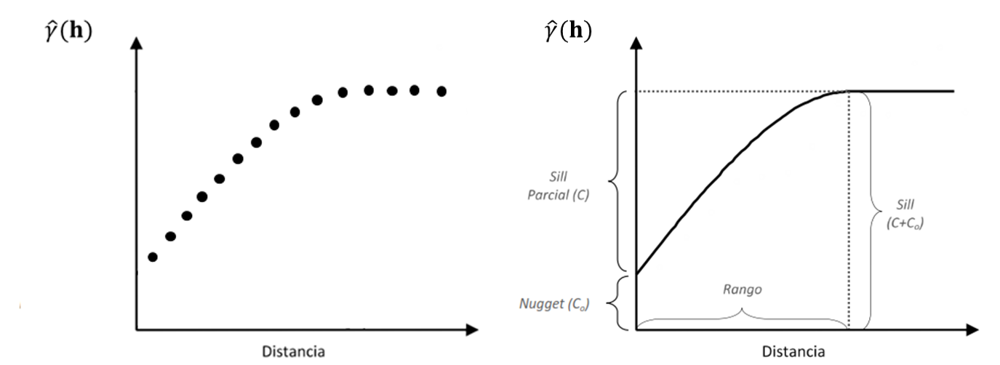

2 Caracterización de variabilidad espacial
Denotamos el proceso espacial en \(d\) dimensiones como: \({Z(s): s\in\ D\subset R^d}\) donde \(Z\) denota el atributo que observamos, \(s\) es la ubicación en la cual \(Z\) es observada y es un vector de coordenadas de dimensiones \(n\times2\) y \(D\) es el dominio. Los procesos espaciales que se abordarán en este libro son procesos bidimensionales, \(d=2\) y \(s=x,y \prime\) son tratadas como coordenadas cartesianas. Cuando la \(d\) es mayor a 1, el proceso estocástico subyacente es definido como un campo aleatorio.
La colección de n observaciones georreferenciadas que conforman un conjunto de datos espaciales deben entenderse como una muestra de tamaño uno de una distribución n-dimensional. En este caso la \(E\left[Z(s)\right]=\mu(s)\) representa el promedio del atributo en la ubicación \(s\) sobre la distribución de una posible realización. Si quisiéramos determinar el valor esperado para un sitio no observado, para \(s_0\), sería necesario repetir las observaciones en ese punto, pero usualmente solo se tiene una observación por sitio. Sólo se puede hacer inferencia basada en una muestra de tamaño uno, bajo condiciones de estacionaridad, es decir cuando la esperanza es la misma en todos los puntos. Por ello, un supuesto importante para el análisis de los datos espaciales será el de estacionaridad. Bajo estas condiciones la variabilidad espacial podrá ser caracterizada a través de funciones basadas solo en varianzas y covarianzas o autocorrelaciones en los datos espaciales.
La autocorrelación espacial mide la correlación lineal entre los valores de una variable aleatoria y los de otra construida a partir del rezago de la primera. Puede interpretarse como medida de la coincidencia de valores similares de una variable en espacios geográficos cercanos, es decir, la variable tiende a asumir valores similares en unidades geográficamente cercanas. Mediado por la distancia, queremos saber qué tan semejante o diferente es el valor de la variable “consigo misma”. Luego, para una variable espacialmente autocorrelacionada, los valores observados en el espacio no serán aleatorios, sino que estarán espacialmente relacionados.
La autocorrelación puede ser global o local. El primer tipo considera los valores de todas las observaciones, mientras el segundo solo los valores de las observaciones de un sitio respecto a los de observaciones vecinas. En ambos casos, la autocorrelación espacial puede ser medida en términos de su intensidad; una autocorrelación espacial fuerte significa que los valores del atributo de las unidades de observación geográfica vecinas muy parecidos o predecibles desde el valor del sitio, el caso contrario se produce cuando la distribución en sitios vecinos refleja un patrón aleatorio. El análisis de autocorrelación espacial requiere contar con una medida de correlación lineal apropiada para medir grados de semejanza entre las observaciones en un sitio y en su entorno.
Los índices de autocorrelación espacial expresan de manera formal el grado de correlación lineal entre las variables aleatorias representadas funcionalmente por el vector de valores observados y el vector de medias ponderadas espacialmente en las unidades vecinas, llamado el vector con lag espacial. El cálculo de estos índices en un espacio continuo requiere la definición de una matriz de ponderación espacial. Ésta puede tener elementos binarios para indicar cuáles son las observaciones que pertenecen al vecindario de cada dato, i.e. las observaciones “conectadas” con cada dato.
También puede tener como elementos, los valores de un coeficiente de continuidad que mide el grado de conexión entre un par de datos. El elemento \(w_{ij}\) de la matriz de ponderaciones \(W\), es el peso aplicado a la comparación de las observaciones en la posición \(i\) y la posición \(j\). Usualmente se utilizan redes de conexión que derivan en un matriz de pesos espaciales. La red de vecindarios también puede ser definida considerando puntos vecinos a aquellos contiguos ubicados entre un límite inferior y superior, previamente preestablecido. Cuando las entidades se encuentran distribuidas en forma homogénea en el espacio, suele recomendarse la red de conexión obtenida por el método de triangulación de Delaunay Las redes de conexión también pueden ser adaptadas manualmente pudiéndose excluir contactos entre sitios cercanos o incluir relaciones entre sitios lejanos.
Por ejemplo, el índice de autocorrelación espacial de Geary (GI), expresa la magnitud de las desviaciones entre observaciones en diferentes localizaciones. Siendo \(w..\) la suma de todos los pesos, la expresión del índice es:
\[GI=\frac{(n-1)\sum_{i}\sum_{j}{w_{ij}(Z(s_i)\ -\ Z(s_j))^2}}{2w..\sum_{i}{(Z(s_i)-\bar{z})}^2}\]
El valor de GI se encuentra en el intervalo [0,2]. Si no hay autocorrelación espacial, el valor esperado de GI es 1. Valores del índice entre 1 y 2 indican autocorrelación espacial negativa, y entre 0 y 1 autocorrelación espacial positiva. Este índice se relaciona inversamente con el índice MI, es decir valores más cercanos a 0 sugieren autocorrelaciones positivas más fuerte. GI es más sensible a pequeñas diferencias entre posiciones vecinas que el IM. Los índices de autocorrelación espacial local son calculados para cada sitio y usan solo ponderadores para las distancias entre las observaciones de ese sitio y las restantes. El índice LM fue descripto anteriormente para ejemplificar su uso en la detección de outliers. Otro índice de autocorrelación espacial local es el índice de Getis Ord (GO) el que se calcula como la suma de los valores observados para la \(j-ésima\) variable en el vecindario centrado del \(i-ésimo\) píxel, en relación con la suma de todas las observaciones. Su expresión estandarizada es:
\[{GO}_i=\frac{\sum_{i=1}^{m}{w_{i,i^\prime}{Z(s}_{i^\prime})-\bar{Z}\sum_{i=1}^{m}w_{i,i^\prime}}}{S\sqrt{\frac{m\sum_{i=1}^{m}{w_{i\neq i^\prime}^2-\left(\sum_{i=1}^{m}w_{i\neq i^\prime}\right)^2}}{n-1}}}\]
donde \(w_i\) representa pesos espaciales en un vecindario del \(i-ésimo\) píxel de tamaño \(m\). Valores positivos de GO indican grupos locales de valores altos para la variable alrededor de la \(i-ésima\) ubicación, mientras que valores negativos indican grupos locales de valores bajos alrededor de la \(i-ésima\) ubicación. Para evaluar la significancia estadística de estos índices es posible utilizar procedimientos del tipo Monte Carlo (Babai 1979). Las ubicaciones son permutadas en el espacio para obtener la distribución del índice bajo la hipótesis nula de distribución aleatoria.
2.1 Semivariogramas
La dependencia espacial o autocorrelación espacial, puede modelarse mediante un semivariograma. Esta función permite analizar la estructura y la naturaleza de la dependencia espacial en un conjunto de observaciones geo-referenciadas. El proceso espacial puede ser representado por el siguiente modelo estadístico:
\[Z\left(s\right)=\mu+\varepsilon\left(s\right)\]
donde \(\mu\) es la media del proceso y \(\varepsilon\left(s\right)\) es un término de error aleatorio con media cero y covarianza \(C(h)\), donde \(h\) es el lag o separación en el espacio entre dos sitios particulares. Un campo aleatorio \({Z(s):\ s\in\ D\subset R^d}\) es estrictamente estacionario si la distribución espacial es invariante bajo traslación de las coordenadas a través de todo el dominio (estacionaridad en sentido fuerte). La estacionaridad de segundo orden, o estacionaridad en sentido débil, se produce cuando \(E\left[Z\left(s\right)\right]=\mu\left(s\right)\) y \(Cov\big[Z(s),Z(s+h)\big]=C(h)\). Es decir, en un campo aleatorio estacionario de segundo orden, la media es constante y la covarianza entre observaciones sobre diferentes posiciones, es función de la separación espacial entre los sitios en las que son tomadas, \(C(h)\) es la función de covarianza del proceso espacial. La estacionaridad de primero orden implica la estacionaridad de segundo orden, pero la inversa no es cierta.
Dado que \(C(h)\) no depende del valor de las coordenadas y \(Cov\big[Z(s),Z(s+0)\big]= Var \big[Z(s)\big]=C\), en procesos estacionarios de segundo orden, la variabilidad es la misma en todas partes, i.e. \(Var [Z(s)]=\sigma^2\) no es una función de la ubicación espacial. En síntesis, un proceso espacial estacionario de segundo orden tiene media y varianza constantes y la función de covarianza no depende en absoluto de las coordenadas. A \(C\left(h\right)\) también se la conoce como función de autocovarianza y depende de la escala en la cual \(Z\) fue medida. Resulta más conveniente y fácil de interpretar si se la hace adimensional convirtiéndola en autocorrelación \(\rho\left(h\right)=\frac{C(h)}{C}\). La función \(\rho\left(h\right)\) se denomina correlograma del proceso espacial.
Aún si \(Z(h)\) no es estacionaria de segundo orden, el incremento \(Z(s)-Z(s+h)\) puede serlo. Un proceso que tiene esta característica se dice que tiene estacionaridad intrínseca. Esto se produce si \(E\big[(Z(s)\big]=\mu\) y \(\frac{1}{2}Var\big[Z(s)-Z(s+h)\big]=\gamma(h)\).
La función \(\gamma(h)\) es llamada semivariograma del proceso espacial. La clase de procesos intrínsecamente estacionario es más grande que la clase de procesos estacionarios de segundo orden Notar que un proceso espacial que presenta estacionaridad intrínseca no es necesariamente estacionario de segundo orden. En condiciones de estacionaridad de segundo orden la función de covarianza es el semivariograma.
Un proceso que parece estacionario en una escala podría no serlo a otra escala (i.e. presentar una tendencia o un componente sistemático). En el modelo, \(\mu\) será remplazado por \(\mu(s)\), i.e. término de tendencia determinístico para el sitio \(s\). El semivariograma, en estos casos se calcula sobre los residuos del modelo. El semivariograma, puede interpretarse como función de la varianza de la diferencia entre las observaciones. Si el semivariograma es sólo una función de la distancia entre observaciones, entonces es conocido como semivariograma isotrópico, i.e. no depende de la dirección. El semivariograma y covariograma son parámetros del proceso espacial y juegan un rol crítico en los métodos geoestadísticos de análisis de datos espaciales.
Un primer paso para caracterizar la variación espacial en un dominio continuo es construir un semivariograma experimental o empírico. Una fórmula usual para computar semivariogramas, es conocida como estimador de los momentos de Matheron
\[\hat{\gamma}(h)=\frac{1}{2 m (h)}\sum_{i=1}^{m(h)} \Big\{Z(s_i)-Z(s_i+h) \Big\}^2\]
donde \(m(h)\) es el número de pares de puntos separados por la particular distancia \(h\). El otro estimador ampliamente usado es el estimador de Cressie- Hawkins o estimador robusto cuya fórmula se expresa como
\[2 \widetilde{\gamma}(h)= \frac{\Big[ \frac{1}{m(h)} \sum_{i=1}^{m(h)} \Big| Z(s_i) - Z(s_i + h) \Big| ^\frac{1}{2} \Big] ^4}{0,457 + \frac{0,494}{m(h)} + \frac{0,045}{m^2(h)}}\]
Este estimador puede ser menos sesgado que \(\hat{\gamma}(h)\) cuando la varianza residual es relativamente pequeña siendo también menos sensible a la presencia de valores externos. El estimador muestra típicamente menor variación en distancias pequeñas y también resulta en valores generalmente más pequeños que el estimador de los momentos de Matheron. Computando cualquiera de los dos estimadores, para las distancias \(h\), obtenemos un conjunto ordenado de semivarianzas. Tales semivarianzas graficadas en función h constituye el semivariograma empírico o experimental.
Los parámetros de un semivariograma son: la varianza nugget o simplemente nugget \((C_0)\), la varianza estructural o sill parcial \((C)\) y el rango \((R)\). La asíntota es llamada la meseta del semivariograma o \(C\) y el lag o distancia \(h^\ast\) en el cual la meseta es alcanzada se denomina \(R\) o rango. Observaciones \(Z(s_i)\) y \(Z(s_j)\) para las cuales \(|| Z(s_i) - Z(s_j)|| \geq h^\ast\) son espacialmente independientes. Si el semivariograma alcanza la meseta asintóticamente, se define el rango práctico \((R_P)\) como la distancia en el cual la semivarianza alcanza el 95% de la varianza umbral o total.
En la práctica el semivariograma empírico \(\hat{\gamma}(h)\) puede no pasar a través del origen. La ordenada al origen del semivariograma representa a \(C_{0}\), por lo tanto \(C_0=\lim_{h\rightarrow0}{g(h)}\neq0\). Este parámetro representa la suma de errores aleatorios o no estructurados espacialmente, así como errores asociados con la variabilidad espacial a escalas más finas que la usada para realizar las mediciones. Un alto valor de \(C_0\) indica que la mayoría de la variación espacial no es explicada por el semivariograma. La varianza umbral o sill se obtiene sumando las varianzas antes mencionadas (\(C_0+C\)) y es la varianza de observaciones independientes, es decir observaciones que fueron tomadas a mayor distancia que \(R\).
Un semivariograma se define como anisotrópico si cambia en alguna forma respecto a la dirección que se considere. Si el semivariograma no solo depende de la longitud del vector h sino también de la dirección del vector entonces el semivariograma es anisotrópico. En los casos isotrópicos, los contornos de isocorrelación son esféricos, mientras que en el caso que haya anisotropía los contornos de isocorrelación son elípticos. Se reconocen dos tipos de anisotropía: anisotropía geométrica y anisotropía zonal. Anisotropía geométrica ocurre cuando el rango del semivariograma cambia en las distintas direcciones, pero no la varianza sill, por lo tanto, la correlación es más fuerte en una dirección que en otra. Anisotropía zonal existe cuando la varianza estructural del semivariograma cambia con la dirección. Anisotropía geométrica significa que la correlación es más fuerte en una dirección que en otra.
Una forma en que la anisotropía geométrica puede ser identificada es graficando un semivariograma experimental direccional. Diferencias en el semivariograma muestral usando diferentes ángulos al computarlo, es indicador de anisotropía. La anisotropía geométrica puede ser modelada cambiando el modelo de semivariograma por un proceso isotrópico transformando las coordenadas. Los modelos teóricos de semivariograma más usados en predicción espacial están basados son isotrópicos, por lo que es necesario una corrección en casos de anisotropía para poder utilizar la metodología clásica de predicción en geoestadística. El radio de anisotropía, es decir, el cociente entre los rangos de la dirección de máximo y mínima variación es usada para mesurar anisotropía. Algunos autores consideran que existe anisotropía significativa si el radio de anisotropía es mayor a 2,5.

En los procesos espaciales continuos, caracterizados por semivariogramas suelen obtenerse medidas del grado de estructuración espacial. Una de éstas es la varianza estructural relativa (RSV):
\[RSV=\Bigg(\frac{C}{C+C_0}\Bigg)\times100\%\]
Un valor alto de RSV indica que las predicciones geoestadísticas serán más eficientes que aquellas obtenidas con métodos de predicción que ignoran la información espacial. Un valor alto de RSV también indica una continuidad mayor del proceso espacial. Zimback (2001) establece que el grado de dependencia espacial puede ser clasificado como: \(RSV \leq 25\%\) bajo, \(RSV\) entre \(25\%\) y \(75\%\) medio y \(RSV \geq 75\%\) alto. También se puede calcular el cociente \(\frac{C_0}{C_0+C}\) y en función de éste hablar de estructura espacial fuerte cuando el cociente es: \(\leq 25\%\), intermedia si el mismo se encuentra entre 25% y 75% y débil si el mismo es mayor al 75%.
2.1.1 Ajuste de semivariogramas
El semivariograma empírico \(\hat{\gamma}(h)\), es un estimador insesgado de \(\gamma(h)\), pero provee solo estimaciones para un conjunto finito de distancias. Para obtener estimaciones de \(\gamma(h)\), para cualquier lag, al semivariograma empírico se le ajusta un modelo teórico. El análisis geoestadístico sigue entonces estos dos pasos: 1) obtención del semivariograma empírico y 2) ajuste de un modelo teórico de semivariograma al semivariograma empírico.
Las funciones que sirven como modelos teóricos de semivariograma deben ser condicionalmente definidas positivas. Existen varios modelos teóricos para funciones semivariogramas, entre los que se encuentran el modelo nugget, el lineal, el esférico, el gaussiano y el exponencial (Figura @ref(fig:figSemivariogramas)). El semivariograma de un proceso de ruido blanco (modelo nugget), donde los valores \(Z\left(s\right)\) se comportan como muestras aleatorias, todas con igual media y varianza sin correlación entre ellas. Este modelo suele ajustar el semivariograma empírico cuando la menor distancia de muestreo en los datos es mayor que el rango del proceso espacial.

El modelo esférico es uno de los más populares entre los modelos de semivariograma. Tiene dos características principales: un comportamiento lineal cerca del origen y el hecho de que a la distancia \(R\) el semivariograma encuentra la meseta y después de esta se mantiene llano. El modelo exponencial se aproxima a la meseta del semivariograma asintóticamente cuando \(\parallel h \parallel\to\infty\). En la parametrización mostrada en la Figura @ref(fig:figSemivariogramas), el parámetro \(R\) es el rango práctico del semivariograma. Frecuentemente el modelo puede encontrarse en una parametrización donde el exponente es \(-\parallel h \parallel / R\). Entonces el \(R_p\) corresponde a \(3R\). Para el mismo rango y meseta de un modelo esférico, el modelo exponencial alcanza el rango más rápidamente, es decir, a menor distancia que el modelo esférico. El modelo gaussiano exhibe un comportamiento cuadrático cerca del origen y produce una correlación de corto rango que son las más altas que para cualquier modelo estacionario de segundo grado con el mismo rango práctico. Además, es el más continuo cerca del origen de los considerados aquí. En la parametrización el rango práctico es \(\sqrt{3R}\).
Es importante notar que, si se realiza un análisis basado en semivariogramas y se pretende comparar los parámetros de los semivariogramas obtenidos bajo distintas condiciones, la utilización de modelos teóricos diferentes resulta poco útil. Hay que tener en cuenta que, por ejemplo, los rangos del modelo esférico y el exponencial no son directamente comparables. El modelo esférico es el único que tiene un umbral verdadero, ya que tanto el modelo exponencial como el gaussiano alcanzan el umbral de forma asintótica, o lo que es lo mismo, no lo alcanzan nunca y el modelo lineal no tiene umbral. En consecuencia, los rangos no son directamente equivalentes entre modelos. En este caso, es más conveniente elegir un único modelo para realizar comparaciones de procesos espaciales.
Los modelos de semivariograma son no lineales a excepción del modelo nugget. Por ello, para la estimación de parámetros estas funciones se usan métodos basados en aproximaciones numéricas. El método de ajuste por mínimos cuadrados ponderados (WLS) es común en la práctica. Para ello, se elige una función y valores iniciales de los parámetros basados en la observación del semivariogramas empírico. El tamaño del conjunto de datos a partir del cual el modelo de semivariograma es ajustado depende del número de lags que se elija. Los valores de las clases de lag en las cuál el número de pares no es mayor a 30 debieran ser removidos si se ajusta el semivariograma por mínimos cuadrados. Journel y Huijbregts 1978 recomiendan solo usar lags menores a la mitad del máximo lag en el conjunto de datos. La distribución de los puntos en el espacio determinará para qué lags esto es posible.
2.2 Correlación espacial bivariada
2.2.1 Coeficiente de correlación
El coeficiente de correlación lineal de Pearson (\(r\)) es una medida de la magnitud de la correlación lineal entre dos variables. Para calcularlo se supone que se tiene una muestra aleatoria de unidades de análisis donde se han registrado simultáneamente dos variables. El intervalo de confianza para \(r\) y el valor \(p\) usados para decidir si la correlación poblacional entre ambas variables es cero o distinta de cero, dependen del tamaño de la muestra \(n\). El tamaño de la muestra es el número de unidades de análisis independientes.
Cuando las variables en estudio exhiben autocorrelación espacial, las observaciones de cada una de éstas estarán correlacionadas dentro de un determinado vecindario, es decir, no serán independientes entre sí. Luego, en el caso de datos espaciales, se viola la suposición de observaciones independientes para la prueba de significancia \(r\). Una propuesta para contemplar las correlaciones generadas por patrones espaciales es calcular el coeficiente de correlación haciendo un ajuste para determinar el número de observaciones independientes (tamaño de muestra efectivo) para acompañar la inferencia necesaria.
El coeficiente de correlación modificado (Clifford, Richardson, y Hemon 1989; Dutilleul et al. 1993), permite evaluar correlación entre dos variables espacializadas en el mismo dominio espacial. La prueba se basa en la modificación de las varianzas y los grados de libertad de la prueba \(t\) estándar usada para evaluar significancia del coeficiente de correlación de Pearson y requiere de la estimación del tamaño efectivo de la muestra.
Considerando \(A \subset D\) un grupo de \(n\) sitios \(A={s_1, s_2,…,s_n}\), se supone que \(Z=Z(s_1), Z(s_2),…, Z(s_n)\) y \(Y= Y(s_1), Y(s_2),…,Y(s_n)\) con media constante y matriz de varianzas y covarianzas \(\Sigma_Z\) y \(\Sigma_Y\). Se divide \(D\) en los estratos \(D_0, D_1, D_2,…\). Entonces \(Cov(Z(s_i),Z(s_j))= C_Z(k)\) y \(Cov\big(Y(s_i),Y(s_j)\big)= C_Y(k)\), con \(s_i, s_j \in D_k\), para \(k= 0,1,…\) (Clifford, Richardson, y Hemon 1989) sugieren como estimador de \(\hat{C}_Y(h)\)
\[ \hat{C}_Y(h) = \frac{\sum_{s_i,s_j \in A_k}{\big( Y(s_i) - \overline{Y} \big) \big( Y(s_j) - \overline{Y} \big)}} {n_k} \]
donde \(n_k\) es la cardinalidad de \(D_k\) y y similaridad para \(C_Z(k)\). Luego, Clifford, Richardson, y Hemon (1989) sugirió utilizar \(n^{-2}\sum_h{n_h\hat{C}_Z(h) \hat{C}_Y(h)}\) Como un estimador de la varianza condicional de \(s_{ZY}=n^{-1} \sum_D{ \big(Z(s)-\overline{Z} \big) \big(Y(s)-\overline{Y} \big) }\). Como resultado se obtiene la prueba \(t\) modificada basada en el estadístico \(W\)
\[W=n \; s_{ZY} \Big( \sum_h{n_h \hat{C}_Z(h) \hat{C}_Y(h)} \Big)^{-2}\]
El cual a partir de una serie de aproximaciones a la varianza del coeficiente de correlación de Pearson (\(\sigma_r^2\)) entre los procesos \(Z(s)\) e \(Y(s)\) se puede escribir de la siguiente manera \(W=(\hat{M}-1)^{1/2}r\), \(\hat{M} = 1 + {\hat{\sigma}}_r^{-2}\) y \(\hat{\sigma}_r^2 = \frac{\sum_h{n_h \hat{C}_Z(h) \hat{C}_Y(h)}} {n^2 s_Z^2 s_Y^2}\).
Se define \(W\) como una prueba t modificada con \(\hat{M}-2\) grados de libertad, donde \(\hat{M}\) es el tamaño de muestra efectivo asumiendo bajo hipótesis nula la no correlación entre \(Z(s)\) e \(Y(s)\). Cuando se presenta una estructura de correlación espacial positiva, generalmente \(\hat{M} < n\), si existe estructura de autocorrelación negativa se espera que \(\hat{M} > n\).
2.2.2 Coeficiente de co-dispersión
Otra forma usada en estadística espacial para explorar patrones de correlaciones o covariaciones entre dos variables espacializadas, es el coeficiente de co-dispersión, que cuantifica la correlación entre dos procesos espaciales para un lag espacial particular sobre un espacio bidimensional. Para dos procesos espaciales intrínsecamente estacionarios \({Z(s):s\in D\subset R^2}\) y \({Y(s):s\in D\subset R^2}\) definidos en una parte de la región \(D\subset R^2\), el coeficiente de co-dispersión es definido como:
\[\rho_{ZY}(h)= \frac{E \Big[ \big(Z(s+h)-Z(s) \big) \big(Y(s+h)-Y(s) \big) \Big]}{\sqrt{E \big[Z(s+h)-Z(s) \big]^2 E \big[Y(s+h)-Y(s) \big]^2}}\]
La estructura de \(\rho_{ZY}\) es computacionalmente similar al coeficiente de correlación de Pearson. Al igual que ese coeficiente, \(\rho_{ZY}(h)\), donde los límites superior e inferior definen una asociación espacial negativa o positiva perfecta, respectivamente. Sin embardo, a diferencia del coeficiente de correlación de Pearson, \(\rho_{ZY}\) depende del lag \(h\), que enfatiza la idea de que la correlación espacial es un valor asociado con una distancia en el plano. El cálculo de la correlación se realiza para diferentes distancias y direcciones en el espacio. Cuando el coeficiente de co-dispersión se calcula para muchas direcciones, es útil mostrar esos valores en un solo gráfico. Vallejos et al. (2015) proponen el mapa de co-dispersión para resumir en un plano los valores de los coeficientes de co-dispersión obtenidos para distintos lag espaciales (direcciones y distancias). El gráfico resume la información sobre la correlación entre dos procesos espaciales en forma radial sobre un plano que circunscribe los coeficientes en una semiesfera de radio no mayor al rango del proceso espacial @ref(fig:figGrafCoDisp). En general las correlaciones espaciales que se observan desde un gráfico de co-dispersión permanecen ocultas en el análisis exploratorio usual y pueden ser distintas a las correlaciones lineales de Pearson no restringidas espacialmente. El gráfico de co-dispersión no debe ser confundido con un mapeo de la co-dispersión de las variables en el espacio de interés. No captura similitudes relacionadas con los patrones o formas que están presentes en los procesos espaciales, sino que captura la dependencia espacial entre los procesos para una distancia h. Los ejes del gráfico de co-dispersión hacen referencia a los lag y direcciones y no a las coordenadas de los sitios muestrales originales.

2.3 Interpolación Kriging
La predicción espacial, es decir la predicción de valores de la variable en sitios del campo espacial donde no existen observaciones, usualmente se hace por el método kriging basándose en el semivariograma ajustado. Kriging proporciona el mejor estimador lineal insesgado del valor esperado para el sitio y un error de estimación conocido como varianza kriging. Esta varianza depende del modelo de semivariograma ajustado y de la ubicación en el espacio de los datos observados ya que son los datos observados en distintos sitios los que proveen información para aproximar el valor en el sitio sin dato. Las interpolaciones basadas en semivariograma, se denominan geoestadísticas y tienen ciertas ventajas respecto a interpolaciones determinísticas, como las obtenidas por el método IDW que se basa en las distancias geométricas entre los sitios con datos y el sitio a interpolar. Las observaciones que participan en la predicción se ponderan de forma distinta según la distancia estadística a la que se encuentran.
Los parámetros del semivariograma son los que gobiernan la asignación de los pesos o ponderaciones de las observaciones vecinas al sitio al cual se le asignará la predicción. El parámetro nugget es determinante en la asignación de pesos. si la varianza del error es muy alta, todas las observaciones tenderán a tener el mismo peso en la interpolación. Por el contrario, si la varianza del error es baja, los coeficientes de ponderación serán distintos. Si el rango aumenta, cada punto tendrá mayor peso en la interpolación de otras observaciones. Entre los métodos de interpolación geoestadísticos que utilizan todos los datos simultáneamente se destacan los métodos de kriging ordinario, simple y universal. En el kriging ordinario la media de la variable es estimada localmente. En caso de conocer la media poblacional de la variable, hecho que raramente ocurre, se utiliza el kriging simple. En el kriging universal se estima también la influencia de una tendencia espacial de los datos. La predicción asignada a los puntos incógnita puede realizarse de manera puntual (kriging puntual) o definiendo bloques (kriging en bloques) (Schabenberger y Gotway 2005; Webster y Oliver 2007).
2.3.1 Kriging ordinario
El kriging ordinario supone que la variación es aleatoria, que existe dependencia espacial y que el proceso espacial subyacente es intrínsecamente estacionario con media constante y varianza que depende solo de la separación en distancia entre los sitios y no de su posición. La predicción kriging resulta de una combinación lineal de los datos observados. Supongamos que los valores de \(Z\), han sido muestreados en los puntos \(s_1{,s}_2,\ldots,s_n\), para generar N datos \(z(s_i),\ i=1,\ 2,\ldots, N\). Para el caso del kriging ordinario puntual se predice \(Z\) en cualquier nuevo punto \(s_0\) mediante:
\[\hat{Z}(s_0)=\sum_{i=1}^{N}{w_iz(s_i)}\]
donde \(w\) son los pesos asignados a cada observación. Para asegurar que la estimación del valor esperado para el sitio sea insesgada y de mínima varianza, los pesos son dado de manera que:
\[\sum_{i = 1}^{N}{w_i=1}\]
\[E\big[\hat{Z}(s_0)-z(s_0)\big]=0\]
\[\begin{align*} Var\big[\hat{Z}(s_0) \big] & = E\big[\hat{Z}(s_0) - z(s_0)^2 \big] \\&= 2\sum_{i=1}^{N}{w_i\gamma(s_i-s_0)-\sum_{i=1}^{N}\sum_{j=1}^{N}{w_iw_j\gamma(s_i-s_j)}} \end{align*}\]
donde la cantidad \(\gamma(s_i - s_0)\) es la semivarianza de \(Z\) entre el punto de muestreo \(i\) y el punto objetivo \(x_0\) y \(\gamma(s_i - s_j)\) es la semivariancia entre los puntos de muestreo \(i\) y \(j\). Las semivarianzas se derivan del modelo teórico de semivariograma, debido a que no hay existen valores de semivarianzas entre los sitios con datos y los sitios objetivos donde no existen valores observados. Si un sitio objetivo también es un punto de muestreo, el kriging puntual devuelve el valor observado en ese sitio y la varianza de estimación es cero. El kriging puntual es un interpolador exacto en este sentido. El siguiente paso en kriging es encontrar los pesos que minimizan la varianza de la predicción sujeto a la restricción de que la suman de los pesos se igual a 1.
\[\sum_{i=1}^{N}w_i\gamma(s_i-s_0)+\psi(s_0)=\gamma(s_j-s_0) \forall j\]
La cantidad \(\psi (s_0)\) es el multiplicador de Lagrange introducido para lograr la minimización. La solución de las ecuaciones de kriging proporciona los pesos para las ponderaciones y la varianza de predicción se obtiene de la siguiente forma:
\[\sigma^2(s_0)=\sum_{i=1}^{N}{w_i\gamma(}s_i-s_0)+\ \psi(s_0)\]
2.3.2 Kriging en bloques
El kriging en bloques consiste en estimar directamente el valor promedio de la variable sobre un soporte mayor que el soporte de los datos (bloque). Intuitivamente, la idea es calcular mediante kriging puntual los valores en todos los puntos de una superficie o bloque y usar la media de las predicciones como estimador del valor esperado para el sitio. La estimación para cualquier bloque sigue siendo un promedio ponderado de los datos, \(z\ (s_1),\ z\ (s_2),\ ...,\ z\ (s_N)\):
\[\hat{Z}(B)=\sum_{i=1}^{N}{w_iz(s_i)}\]
Los factores de ponderación se obtienen nuevamente para minimizar la varianza del error y para obtener un estimador insesgado de la media. La grilla de predicción sobre la que se construye el mapa de variabilidad espacial presenta una dimensión menor que la de los bloques, asegurándose la obtención de un mapa más suavizado respecto al obtenido con kriging puntual. El kriging en bloques ha mostrado ser efectivo a la hora de reducir errores que pueden trasladarse en los mapas como consecuencia de inexactitudes de datos puntuales.
2.3.3 Kriging local
Hemos dicho que los pesos de las observaciones en la predicción geoestadística son funciones de las semivarianzas entre las observaciones en sitios en el vecindario, \(\gamma(s_i-s_j)\), y entre cada punto de muestreo y el punto a predecir, \(\gamma(s_i-s_0)\). En general solo los puntos cercanos al punto a predecir tienen un peso significativo. Cuando la relación nugget:sill es pequeña el interpolador kriging es visto como un predictor local, donde para la predicción de \(Z(s_0)\) participarán sólo datos de puntos dentro de la proximidad de \(s_0\) (kriging neighborhood o kriging local). El kriging local esencialmente asigna pesos \(w(s_0)=0\) para todos los puntos \(s_i\) fuera de la zona en la que se quiere predecir. Por otra parte, esto permite que podemos aceptar el supuesto de estacionariedad local (o cuasi estacionariedad), es decir se puede restringir el supuesto de estacionariedad de la media a los vecindarios del kriging. Lo que sucede en distancias mayores a las del vecindario del sitio no será de importancia para la predicción en el sitio. La predicción y varianza kriging dependen principalmente de la parte del semivariograma cercana al origen, por ello es de importancia modelar bien el semivariograma en estos lugares, i.e. dar más peso a las semivarianzas experimentales cercanas al origen. No hay reglas para definir el vecindario para implementar el kriging local, aunque cuando el nugget es relativamente bajo se pude definir un radio de vecindad cercano al rango o rango práctico del modelo de semivariograma ajustado. Cuando el efecto nugget es importante el radio de vecindad debería ser mayor al rango ya que es probable que puntos más distantes tengan aún peso significativo. Otra alternativa para definir el vecindario se basa en términos de un número mínimo y máximo de datos cercanos al punto a predecir. Algunos autores recomiendan utilizar un mínimo de 7 vecinos y un máximo de 20.
2.3.4 Kriging universal
La suposición de estacionariedad intrínseca no se cumple cuando existen tendencias geográficas pronunciada de naturaleza sistemática y no aleatoria. La tendencia puede ser regional, es decir, una variación sistemática en toda la región de interés o local de un punto a otro dentro de la región estudiada. La existencia de tendencias puede ser explorada graficando los datos de la variable analizada en función a la variable que se supone genera la tendencia espacial. La tendencia también se manifiesta en los semivariogramas experimentales con un incremento de la semivarianza con la distancia que no tiene límites. Si hay tendencia, entonces \(\mu\) ya no es constante, sino que depende de s. Además, el semivariograma experimental de los datos ya no estima el semivariograma de los errores aleatorios, \(\varepsilon(s)\). Se necesita estimar el semivariograma de \(\varepsilon(s) = Z (s) - \mu(s)\). Cuando este variograma es el input del kriging, el proceso de interpolación se conoce como “kriging universal” y la predicción se obtiene como:
\[\hat{Z}(s_0)=\sum_{i=1}^{N}{w_i \; f_kz(s_i)}\]
donde \(f_k\) es función de las coordenadas espaciales.
2.3.5 Validación cruzada
La predicción implica asignar nuevos valores de las variables respuesta a contextos o escenarios que no corresponden al conjunto de escenarios medidos, es decir no se trata de aquellos sitios que utilizaron para realizar la predicción espacial. Entre las alternativas para estimar la exactitud de la predicción existen las técnicas de validación cruzada o técnicas de partición del conjunto de datos en datos de calibración y datos de validación (Efron y Hastie 2016). Es necesario identificar un grupo de observaciones sobre las que se ajustará el modelo o el método que permite predecir, usualmente llamado datos de calibración, y otro grupo que se usará para validar, llamado datos de validación. El modelo (semivariograma teórico) se ajusta sobre el conjunto de datos de entrenamiento y posteriormente se usa para la predicción de interés, con observaciones del subconjunto de validación. Seguidamente, los valores observados del conjunto de validación se comparar con los valores predichos por el modelo. Usualmente el proceso se repite cruzando el rol de los subconjuntos de datos, es decir el que era de validación pasa a ser de calibración y viceversa.
Sin embargo, otras estrategias pueden ser usadas para la selección de los datos de entrenamiento y validación. Una es particionar en forma aleatoria los datos en ambos conjuntos. Otro tipo de validación cruzada es dejando uno fuera (Leave-One-Out) donde se utiliza una sola observación para conformar el subconjunto de validación y se deja al resto como subconjunto de entrenamiento. El modelo se ajusta utilizando las \(n – 1\) observaciones de entrenamiento y se obtiene una predicción para la observación excluida. Este proceso se repite \(n\) veces. Otro tipo de validación cruzada es \(k-fold\), donde las observaciones se dividen aleatoriamente en \(k\) grupos de aproximadamente igual tamaño. Uno de los \(k\) grupos se emplea como subconjunto de validación, mientras que el resto de los grupos se emplean para entrenar el modelo. El proceso de validación cruzada es repetido durante k iteraciones, con cada uno de los subconjuntos de datos de prueba. Un valor común de \(k\) que puede dar buenos resultados en cuanto al equilibrio sesgo-varianza para estimar el error de predicción es \(k=10\). Si el modelo tuvo un buen desempeño, los residuos de la validación cruzada serán pequeños, su media será cercana a cero y no presentarán estructura.
En la evaluación de modelos geoestadísticos, los valores predichos de kriging \(\hat{Z}(s_i)\) se comparan con los observados \(z(s_i)\), y se calcula una medida resumen que caracteriza el resultado de la comparación. Algunas de estas medidas resumen son:
Error medio
\[ME=\frac{1}{N}\sum_{i=1}^{N}\big\{z(s_i)-\hat{Z}(s_i)\big\}\]
donde \(N\) es el número de observaciones, \(z(s_i)\) es el valor verdadero en \(s_i\) y \(\hat{Z}(s_i)\) es el valor predicho en ese punto.
Error cuadrático medio (Mean Square Error, MSE):
\[MSE=\frac{1}{N}\sum_{i=1}^{N}{\big\{z(s_i)-\hat{Z}(s_i)\big\}^2}\]
Raíz del error cuadrático medio:
\[RMSE=\frac{1}{N}\sqrt{\sum_{i=1}^{N}\big\{z(s_i)-\hat{Z}(s_i)\big\}^2}\]
Media del cociente del error cuadrático (Mean Squared Deviation Ratio, MSDR):
\[MSDR=\frac{1}{N} \sum_{i=1}^{N}\frac{ \big\{ z(s_i) - \hat{Z}(s_i) \big\}^2} {\hat{\sigma}^2(s_i)}\]
donde \(\hat{\sigma}^2(s_i)\) es la varianza de la predicción kriging en el punto \(s_i\).
Para el caso de datos espaciales, no solo es necesario disponer de una medida de error de predicción global, sino que también hay que evaluar del error de la predicción en cada sitio específico, i.e. dimensionar el error puntual de la predicción espacial.